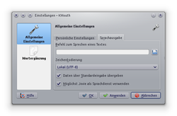
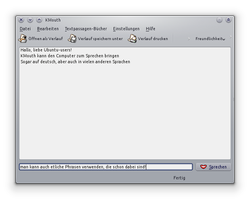
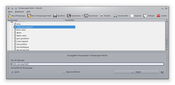

KMouth
Dieser Artikel wurde für die folgenden Ubuntu-Versionen getestet:
Ubuntu 14.04 Trusty Tahr
Zum Verständnis dieses Artikels sind folgende Seiten hilfreich:
 KMouth
KMouth  ist ein Programm, mit dem Texteingaben in Sprache umgewandelt und ausgegeben werden können. Es ist Teil des KDE-Accessibility-Projektes
ist ein Programm, mit dem Texteingaben in Sprache umgewandelt und ausgegeben werden können. Es ist Teil des KDE-Accessibility-Projektes  ; zur Ausgabe können verschiedene Sprach-Synthesizer verwendet werden. KMouth bietet außerdem selbst konfigurierbare Wörterbücher mit Standard-Sätzen und -Äußerungen, der Gesprächsverlauf wird in einem Fenster dokumentiert.
; zur Ausgabe können verschiedene Sprach-Synthesizer verwendet werden. KMouth bietet außerdem selbst konfigurierbare Wörterbücher mit Standard-Sätzen und -Äußerungen, der Gesprächsverlauf wird in einem Fenster dokumentiert.
Installation¶
KMouth befindet sich in den Paketquellen, folgendes Paket muss installiert [1] werden:
kmouth
kde-l10n-de (deutsche Sprachunterstützung für die Hilfefunktion/Handbuch)
 mit apturl
mit apturl
Paketliste zum Kopieren:
sudo apt-get install kmouth kde-l10n-de
sudo aptitude install kmouth kde-l10n-de
Das Programm findet sich nach der Installation

Konfiguration¶
Unter "Einstellungen -> KMouth einrichten..." werden die Konfigurationseinstellungen vorgenommen. "Allgemeine Einstellungen -> Persönliche Einstellungen" betreffen die Aktion nach Auswahl einer Textpassage ("Sofort sprechen" oder "In das Eingabefeld übertragen") sowie Anweisungen zum Verändern der Textpassage-Bücher.
Unter "Sprachausgabe" wird der Befehl für den externen Sprachgenerator eingetragen. Um KMouth mit deutscher Sprachausgabe zu verwenden, bietet sich die Verwendung von eSpeak an. Als Befehl wird die Zeile
cat %f | espeak --stdin -vde -s190
eingesetzt; die eSpeak-Optionen lassen sich natürlich nach eigenem Geschmack anpassen. Über eSpeak lassen sich auch die natürlicher klingenden Stimmen des Mbrola-Projektes verwenden; über Festival kann ggf. auch eine deutschsprachige Ausgabe erfolgen, z.B. über den Eintrag
cat %25f | /PFAD/ZU/festival --language german --tts%20
Weitere Möglichkeiten finden sich im Handbuch, im Anhang wird die Vorgehensweise für andere Synthesizer dargestellt.
Unter Zeichenkodierung wird der zu verwendende Zeichensatz für die Texte festgelegt, meist sollte "System" die richtige Wahl sein, für Festival allerdings ISO-8859-15, weil ansonsten Umlaute nicht richtig wiedergegeben werden. Mit der Aktivierung von "Daten über Standardeingabe übergeben" wird der Text direkt an den Sprachgenerator geleitet, ohne Aktivierung lassen sich bestimmte Parameter verwenden. Aktivierung von "Möglichst KTTDS als Sprachdienst verwenden" führt dazu, dass KMouth zunächst den oben eingegebenen Befehl ignoriert, und versucht, Jovie (dem Nachfolger kttds) für die Wiedergabe zu verwenden. Das ist natürlich nur dann sinnvoll, wenn der tatsächlich installiert ist, als Daemon läuft und zudem richtig konfiguriert ist.
Unter "Wortergänzungen" lassen sich Angaben zu einem Wörterbuch machen, das zu Vervollständigung begonnener Worteingaben verwendet werden soll (Vorschläge erscheinen bei der Eingabe unterhalb des Eingabefensters, und können dort ausgewählt werden). Standardmäßig wird eine aus den KDE-Handbüchern erstellte Wortliste verwendet. Es lassen sich aber auch andere Wörterbücher erstellen/verwenden, oder auch eine zunächst leere Liste anlegen, in der dann die Eingaben gesammelt werden, und so mit der Zeit eine auf den ganz persönlichen Gebrauch abgestimmte Wortliste entsteht.

Benutzung¶
Der auszugebende Text kann über verschiedene Wege eingegeben werden, entweder über die Textpassagen-Bücher (die entsprechenden Drop-Down-Menüs erscheinen rechts oben im Fenster) oder er wird direkt ins Eingabefeld unten geschrieben. Unterhalb der Eingabezeile erscheinen jeweils Vorschläge zur Vervollständigung der Wörter. Dabei wird der Verlauf im Fenster angezeigt; mit der Maus kann auch bereits gesprochener Text markiert und nochmals ausgegeben werden. Über die Schaltfläche "Öffnen als Verlauf" lassen sich als weitere Möglichkeit bestehende Text-Dateien (*.txt) aufrufen, die angezeigt, und als Ganzes oder teilweise wiedergegeben werden können. Der Verlauf lässt sich als Textdatei speichern, oder auch direkt ausdrucken.
KMouth öffnet zwar auch andere Datei-Typen (z.B. Bilddateien oder .rtf), die sich nicht "wiedergeben" lassen, stürzt aber ggf. ab, spätestens, wenn man versucht, den "Text" dann wieder zu löschen.

Textpassagen-Bücher¶
Über den Reiter "Textpassagen-Bücher" können voreingestellte Wörter, Ausdrücke und Sätze aufgerufen werden, die, nach Themen geordnet, in einzelnen Drop-Down-Menüs abrufbar sind. Über "Bearbeiten" wird ein eigenes Editor-Fenster geöffnet, in dem bestehende Einträge verändert, Themen erweitert, oder auch neue Textpassagen-Bücher nach den eigenen Bedürfnissen angelegt werden können. Die Funktionen lassen sich über die Tasten, oder den Reiter "Datei" aufrufen. Neue Textpassagen-Einträge sollten in "aufgeklappten" Büchern erstellen; ansonsten werden sie auf der Textpassagen-Bücher-Ebene angelegt.
Eine ausführliche Dokumentation liefert das Handbuch, dessen aktuelle Version online (KMouth-Handbuch) eingesehen werden kann.
Tastenkürzel¶
| KMouth | |
| Tasten | Funktion |
| Strg + O | "Datei -> Öffnen als Verlauf..." |
| Strg + S | "Datei -> Verlauf speichern unter..." |
| Strg + P | "Datei -> Verlauf drucken" |
| Strg + Q | "Datei -> Beenden" |
| Strg + X | "Bearbeiten -> Ausschneiden" |
| Strg + C | "Bearbeiten -> Kopieren" |
| Strg + V | "Bearbeiten -> Einfügen" |
| Strg + M | "Einstellungen -> Menüleiste anzeigen" |
| F1 | "Hilfe -> Handbuch zu KMouth" |
| ⇧ + F1 | "Hilfe -> Was ist das?" |
Alternativen¶
Sprachausgabe
 - Übersichtsseite
- ÜbersichtsseiteGespeaker - vergleichbares Programm, Frontend für eSpeak, bietet allerdings keine "Textpassagen-Bücher"
Omilo - ähnliches Programm, das Festival/Flite und Mary-Stimmen verwenden kann
- Erstellt mit Inyoka
-
 2004 – 2017 ubuntuusers.de • Einige Rechte vorbehalten
2004 – 2017 ubuntuusers.de • Einige Rechte vorbehalten
Lizenz • Kontakt • Datenschutz • Impressum • Serverstatus -
Serverhousing gespendet von